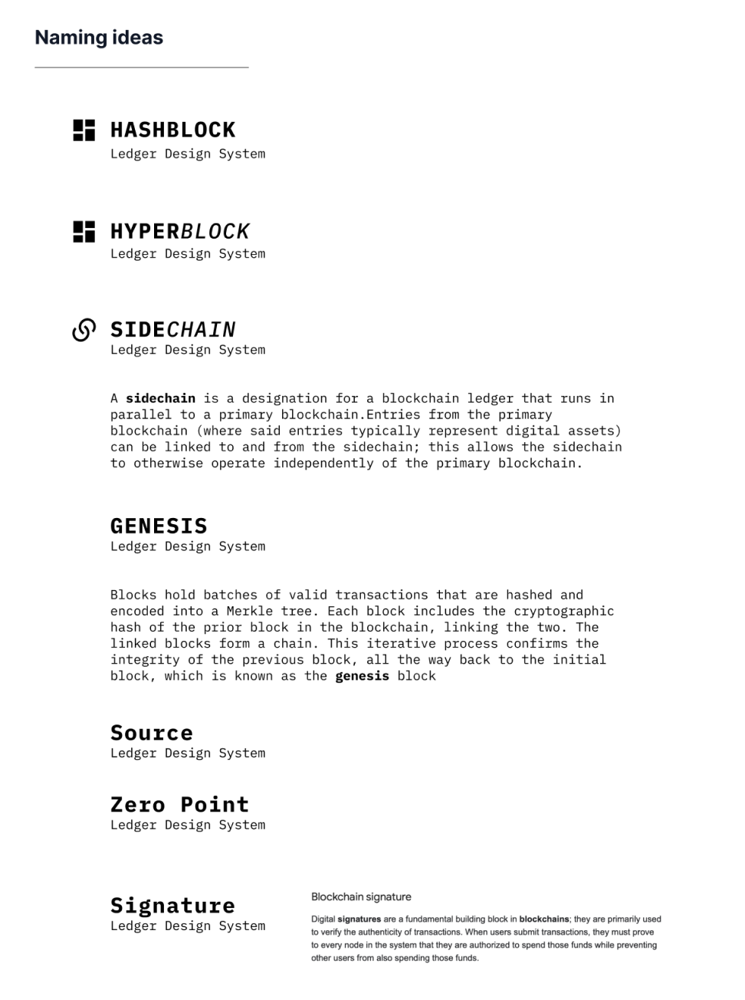
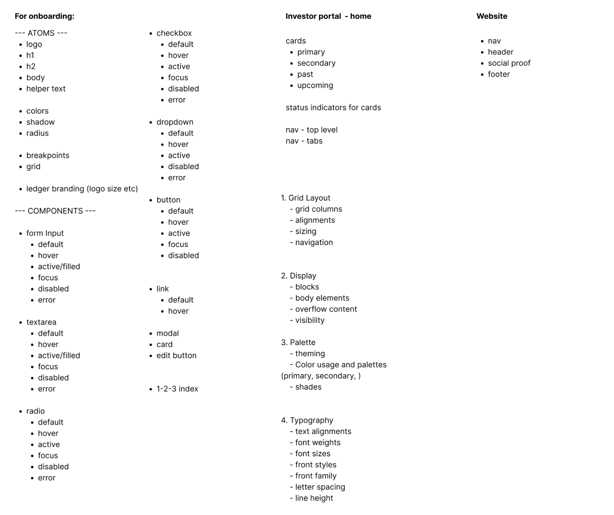
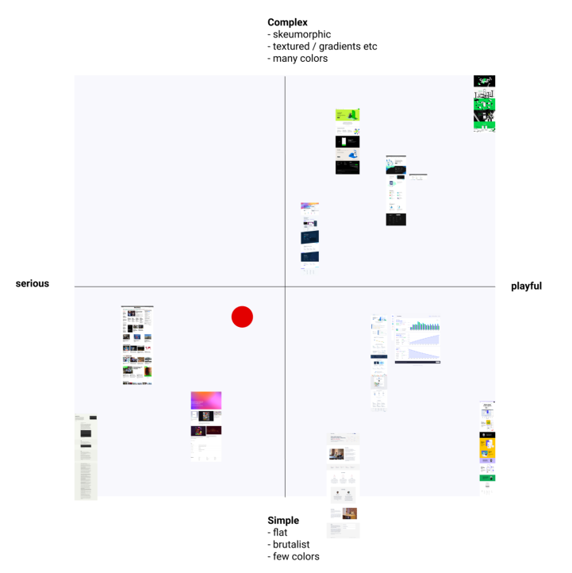
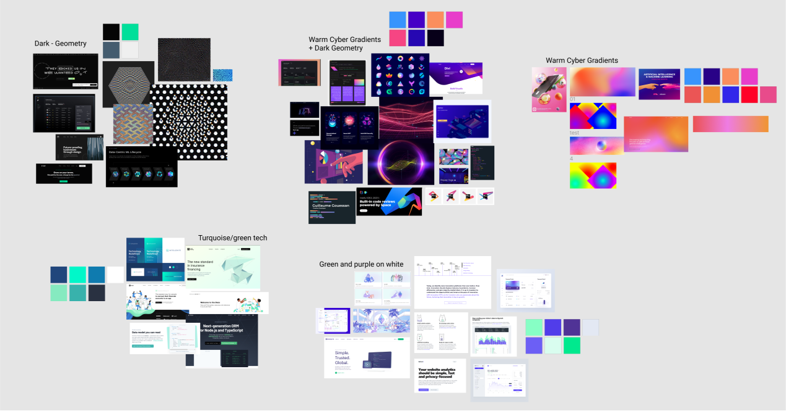
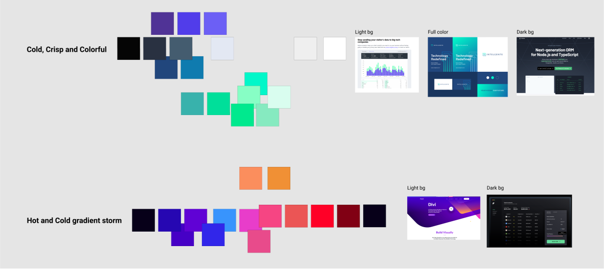
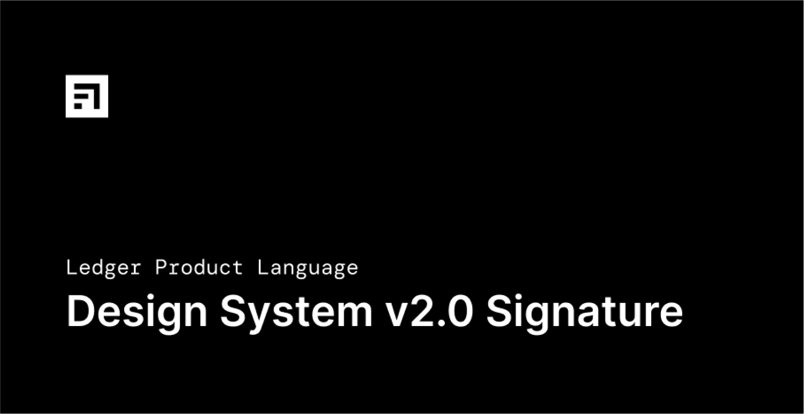
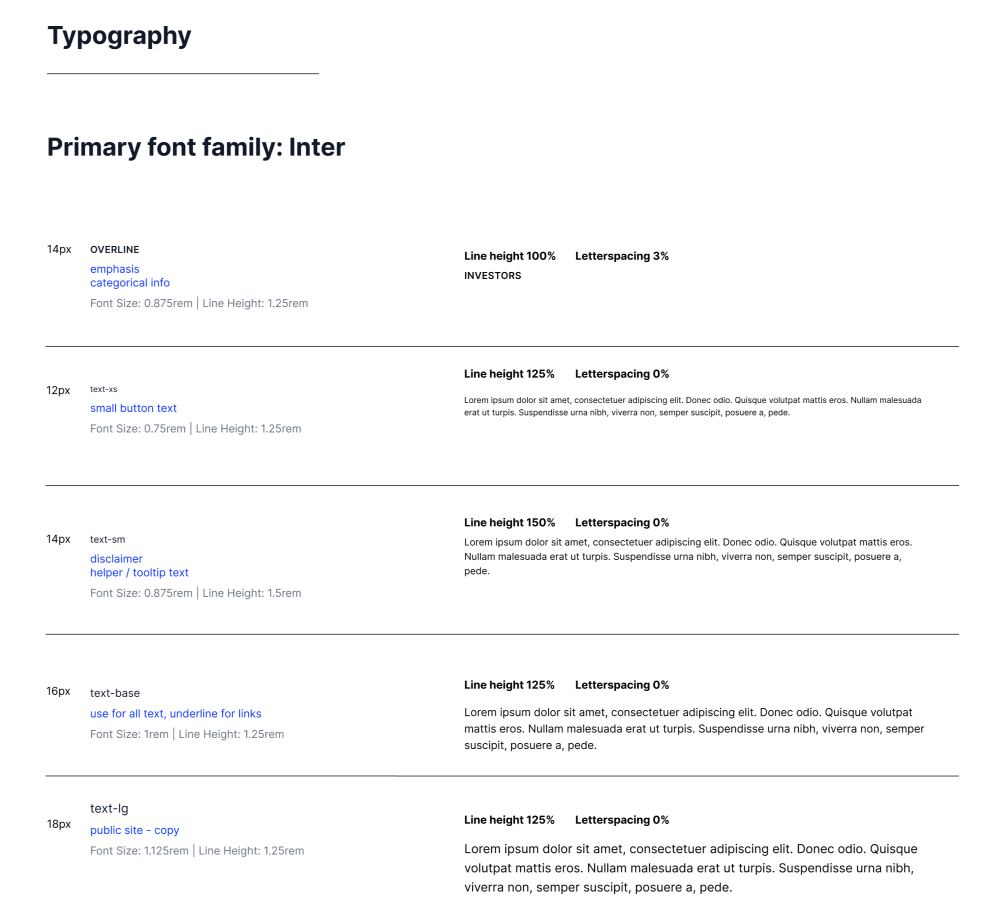
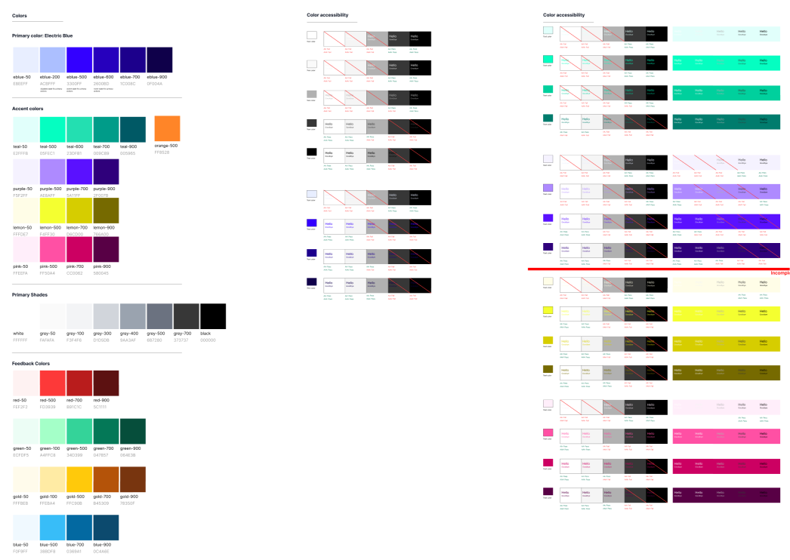
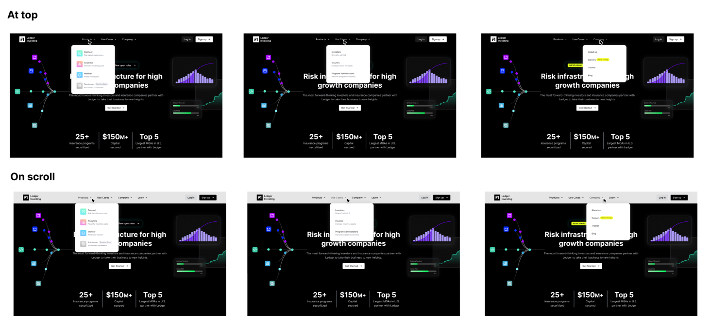
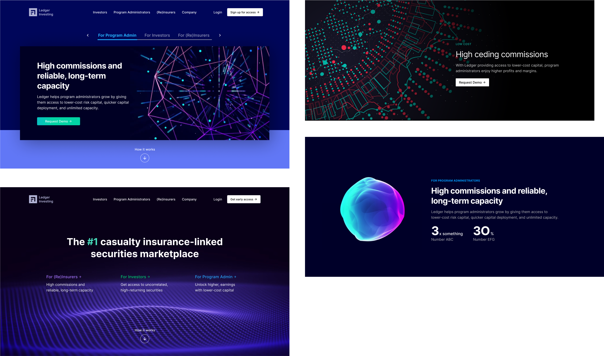

Signature UI design system
v2.0+ of Ledger's inhouse design system
Signature UI design system was the design system that Arjun (Product designer) and I came up with to standardize and facilitate the complete overhaul of the Ledger public website, internal platforms, and marketing materials. By spending the time and effort to create and maintain this design system we would be able to work faster and more efficiently on update existing designs and creating brand new ones as well.
Release date:
November 2022
My role:
User research
Product design
Team:
Arjun S.(Design)
Gabe H.(ENG)
Cat L.(ENG)
Table of contents
Tags
Links
01. Background
In the first year that I joined Ledger, it was in the midst of a platform update as well as a public website update. Since we had a lot of work moving forward we wanted to have a lot of work done; the design team (Arjun and I) decided that spending a bit of time upfront on the design system would be able to save us time rebuilding large parts of Ledger.
The team had a lot of fun coming up with a name that would match our company origins. Ledger was originally going to be based on decenteralized means of insurance. In the spirit of this we voted on a design system naming scheme that reflected this.
From the starting point we made a big list of all the components and elements that would be where we started.
02. Explorations
As part of a semi-rebranding of Ledger. We spent some time thinking about how the look and feel of Ledger might evolve from where we started.
We thought about the our tone and voice of our visual elements. It would be important as Ledger is a financial company that works with a lot of big insurance groups and investors. We had to think about our customer base while also the original spirit of the company.
We got a lot of inspiration from other fintech apps and companies. Looking at the websites and their styles, mapping out the current trends and seeing what made sense for Ledger.
In the end we leaned towards a cooler set of colors with a darker overall feel. We like how this made Ledger feel more calm and collected. The colors would still have some energy to them using higher contrast tones.
03. Design system
Signature UI is technically version 2.0. This is because we felt like 2.0 represented a second vision of Ledger from the original design when it was first launched. With Signature UI we used this design system to launch a whole new updated website, new customer platform, and eventually all the sales and marketing materials.
 The font choice we went with was from Google Font, Inter. We wanted something clean and modren that was easy to render and always avaiable from Google's servers.

To continue to build on the dark tone but high energy contrast of the color scheme, we picked Ledger
"electric-blue" (#E8EEFF) as our new primary color. The secondary
accent colors that would fit our cool temperature theme was having Teal (#05FEC1) and Purple (#AE8AFf). These
three colors would be added on top of dark gray
and white backgrounds.
We spent a good amount of time tweaking the colors and contrasts to insure that we would have good coverage on
Web Content Accessibility Guidelines (WCAG) 2.2 color contrast AA
guidelines.
Layouts is an important section that we spent some time on. There were two key things we wanted when we were
working on the design of our grid system.
1. We wanted make sure that we could work with a large number of different web and platform layouts. Some of the
screens would have different navigational elements
such as side navs and additional content that would split the number of columns. Other were more straight forward
but would then end up with a lot of empty space in between.
2. We wanted to make sure that we would be able to design with mobile in mind. Mobile wasn't always just a single
column version of the page, we allowed for 4 columns to give
more flexibility if needed.
Many more pages and pages of components and details.
One of the important things we added to the designs system was sometimes the specific interaction details. We would be working closely with the front-end engineering teams and for some of the components they would need guidance on how the component would work in different conditions. Such as the top nav bar having a different color upon scroll.

Something I really enjoyed while working on all this was just being able to experiment and try out differen
things. We might not have used all of it; in fact
only the most core components got finalized, but it was still cool to think about and leave new ideas for future
updates.
For example, I would have liked to continue on the illustration section to build out some components for how
illustration can and should be used. In that section we gave some examples and would be
cool to even have parts so that our team could put together custom illustrations. It's things like this that
really enhances the design of fintech platform from being
all tables and charts.